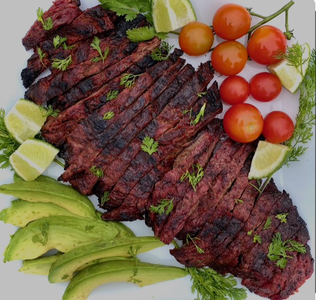

Carne Asada

- 1.5-2 lbs Ranchera, Skirt, orFlap Steak
- 2 limes juiced
- 4 cloves garlic crushed
- 1/2 cup fresh squeezed Orange Juice
- 1 teaspoon salt
- 1/2 teaspoon black pepper
- 1/4 cup vegetable oil
- 2 tablespoons water
- Combine lime juice, crushed garlic, orange juice, cilantro, salt, pepper, vegetable oil, and water
in a gallon size bag -- squeeze around to mix it up
- AddSteak to bag--refrigerate-- let sit for 30 minutes - 4 hours, rotate bag at least once
- Preheat an out door grill mesquite charcoal is preferred but gas is OK
- Cook steak over high heat 7-10 minutes on each side
- Rest steak for 10 minutes before cutting -- cutt against the grain
- Serve! If you followed the salsa and tortilla recipes arrange steak on tortillas and add salsa!
(Top with chopped white onion and cilantro)